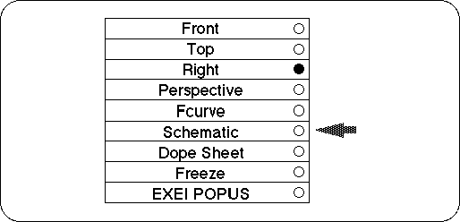
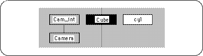
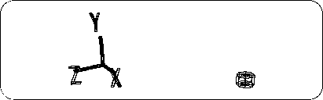

Return to previous page | Return to menu | Go to next page
Here, pay attention to the Right window. Click Left Mouse Button where "Right" is displayed here, and the pop-up menu shown in the figure will be displayed (Figure 3-29).

Currently, “Right” is checked with a black circle. Select “Schematic” here.
will display as shown in the figure (Figure 3-30).

In this display screen, the objects that are white are the selected objects, and the objects that are black are the unselected objects.
While holding down the Spacebar on theSchematic screen, press the Left Mouse Button to properly enclose the square labeled “Cube”. The square labeled “Cube” will turn white (“cyl” turns black).
Press and hold the spacebar with the left mouse button around the white “Cube” again. Then “Cube” will be deselected and nothing will be selected.
Now select “Cube” (car object) again and turn it white ( Spacebar + Left mouse button ). Once selected,
[Display] → [Hide] → [Toggle Selection]
Choose.
The car object should disappear from the window (Figure 3-31). So look at the Schematic screen. I think the square color of “Cube” is the same as “Cam_int” and “Camera”. This is a hidden state.

In the future, many objects will be handled on the screen, but it is very hard to see objects that are left untouched on the screen. If it gets in the way, please delete it with [Display] → [Hide]
To display it again, select the object that is hidden on the Schematic screen (here, “Cube”) again, and
[Display] → [Hide] → [Toggle Selection]
Please run the. You should now see the car wireframe again.